Value Creation: Environment and Competitive Advantage
Business objectives and stakeholders, strategic decisions, the generic and specific environment with Porter's five forces, corporate and business strategy, sources of competitive advantage, diversification and the value chain.
Central idea: the objective of the firm moves from the classical maximization of profit to the creation of value, agreed among its stakeholders. To reach it, the firm defines a strategy: it studies the generic and the specific environment (Porter's five forces), decides where to compete (corporate strategy: product, geographical and vertical scope) and how to compete (business strategy: cost or differentiation advantage), and analyses its own activities through Porter's value chain.
The topic is organised in three parts [Slide 2]: business objectives (the traditional concept of profit maximization, and the new objectives that arise from the role of stakeholders), business strategies and their types, and the generic and specific environment.
§ 1 The traditional concept: profit maximization [Slide 3]
Traditionally, the objective of the business is identified with the objective of the entrepreneur, and the Classical Theory states that this objective is profit maximization. The view has four limitations:
- profit is difficult to define and to quantify;
- it ignores the risk associated with achieving the profits;
- the very concept of maximization is questionable;
- it gives an excessive leading role to the entrepreneur, whereas in practice ownership and control are separated.
§ 2 Management and objectives [Slide 4]
To avoid the conflict of interests between managers and shareholders, their objectives must be aligned. Four mechanisms do so: incentive compensation, the market of enterprises, the labour market and the markets of the factors of production. In the end, managers try to maximize their own interests, always subject to achieving a minimum level of profit that satisfies the shareholders.
§ 3 Stakeholders and organizational theory [Slides 5-6]
Many groups have a stake in the objectives of the firm. Around management stand the shareholders, banks and other financial agents, customers, suppliers, the State, employees and labour unions, and society (corporate social responsibility) [Slide 5].
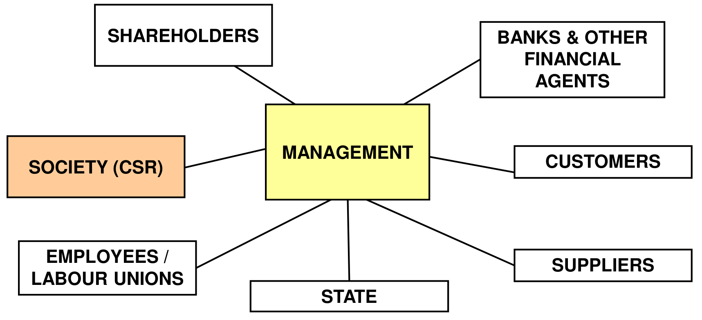
According to organizational theory, the objectives of the business are the outcome of a negotiation among these stakeholders, limited by two facts: the firm must survive, and not all groups have the same decision-making power. The business objective is therefore the one that satisfies the group with the highest bargaining power, while taking into account the objectives of the other groups and the survival of the enterprise. That objective is to maximize the value of the enterprise: to create value [Slide 6].
§ 4 A unified vision: survival, profit and growth [Slide 7]
The three goals form a single cycle. Current and new products and markets generate sales, and sales generate profits. Part of the profits is retained for future investments and adds directly to total equity; the rest is paid as dividends, which support the capital market valuation of the company and thus the equity attributable to investors, which also feeds total equity. Total equity finances new investments, and these renew the products and markets, closing the cycle.
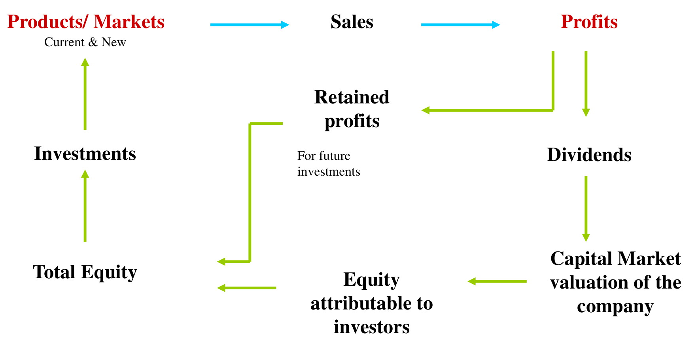
§ 5 Business strategies: levels of decision [Slide 8]
To achieve its objective, the firm defines a strategy: "a plan, method or series of actions designed to achieve a specific goal or effect" (Wordsmyth Dictionary). The strategy unfolds into three levels of decision: strategic, tactic and operative decisions.
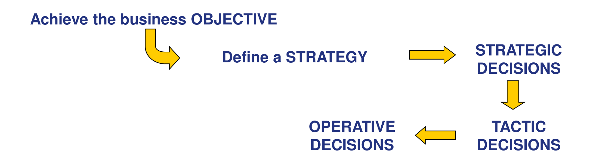
§ 6 Types of strategic decisions [Slide 9]
Strategic decisions belong to two families:
- Corporate strategy, which fixes the scope of the firm: product scope (diversification), geographical scope (internationalization) and vertical scope (vertical integration).
- Competitive or business strategy, which chooses between a cost-leadership strategy and a differentiation strategy.
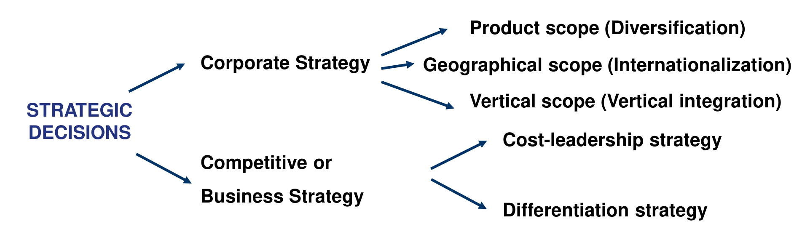
§ 7 What makes a successful strategy [Slide 10]
A strategy succeeds through effective implementation resting on three pillars: long-term, simple and agreed objectives; a deep understanding of the competitive environment; and an objective appraisal of resources.
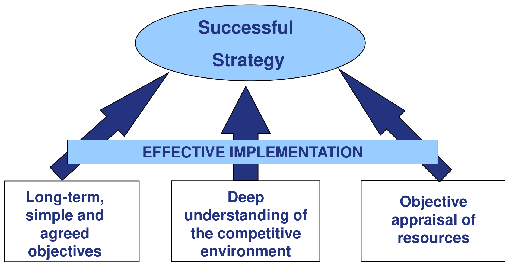
§ 8 The business environment: generic and specific [Slides 11-12]
The environment of the firm has two layers.
The generic environment affects every firm and is described by four groups of factors [Slide 11]:
| Factors | Content |
|---|---|
| Economic | Macroeconomic variables; business cycle period; type of economic policy; country resources |
| Political-legal | Monetary and fiscal policies; labour market regulation; industry regulation |
| Socio-cultural | Value system; level of education; class structure; income distribution; population distribution; etc. |
| Technological | Basic, key and incipient technologies |
The specific environment is the environment of the firm's own industry [Slide 12]. It includes the rivalry within the industry, which depends on concentration, the industry rate of growth and product differentiation; the barriers to entry and to exit; substitutes; and the relationships with customers and with suppliers.
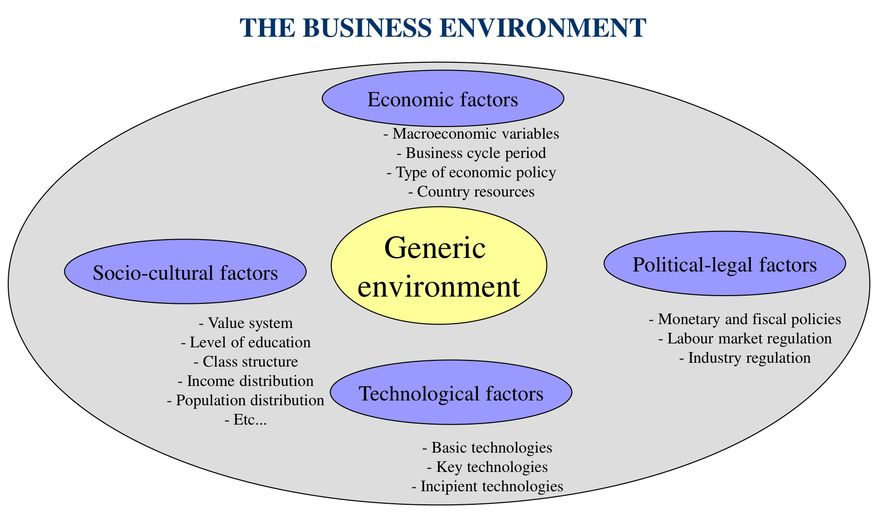
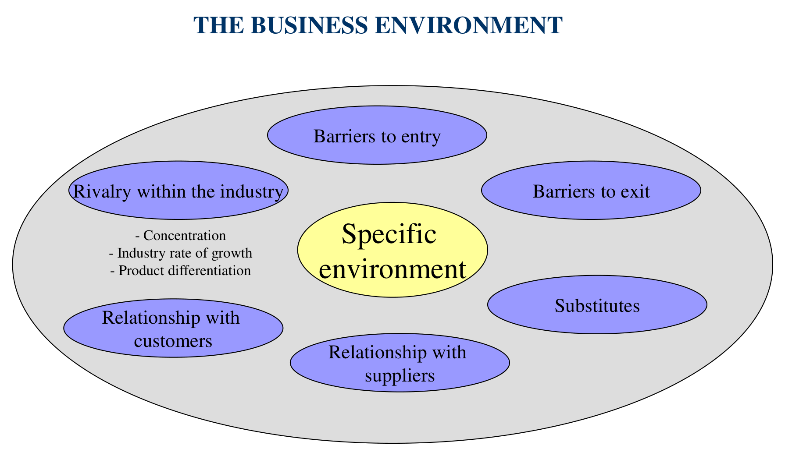
§ 9 From environmental analysis to industry analysis [Slide 13]
The analysis moves from the outside in. At the centre is the industry environment, formed by suppliers, competitors and customers. Around it act the national and international economy, technology, government and politics, the natural environment, the demographic structure and the social structure.
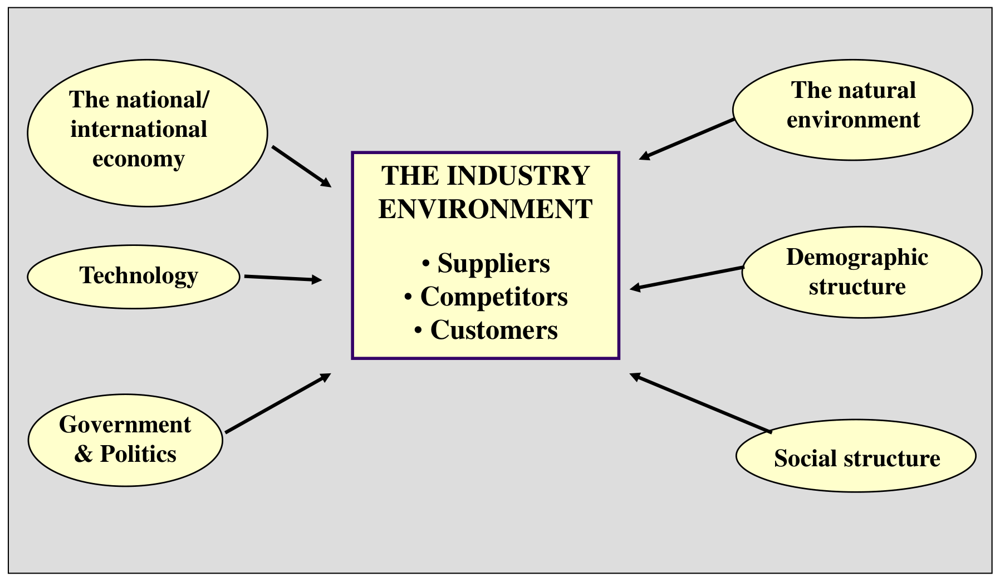
§ 10 Porter's five competitive forces [Slides 14-15]
The industry is analysed with Porter's five competitive forces (Porter, 1982). At the centre is the rivalry among existing firms; around it act the bargaining power of suppliers, the bargaining power of buyers, the threat of new entrants and the threat of substitutes [Slide 14]. Each force depends on a set of determinants [Slide 15]:
| Force | Determinants |
|---|---|
| Supplier power | Suppliers' price sensitivity; relative bargaining power |
| Buyer power | Buyers' price sensitivity; relative bargaining power |
| Threat of entry | Capital requirements; economies of scale; absolute cost advantage; product differentiation; access to distribution channels; legal and regulatory barriers |
| Substitute competition | Buyers' propensity to substitute; relative prices and performance of substitutes |
| Industry rivalry | Concentration; diversity of competitors; product differentiation; excess capacity and exit barriers; cost conditions |
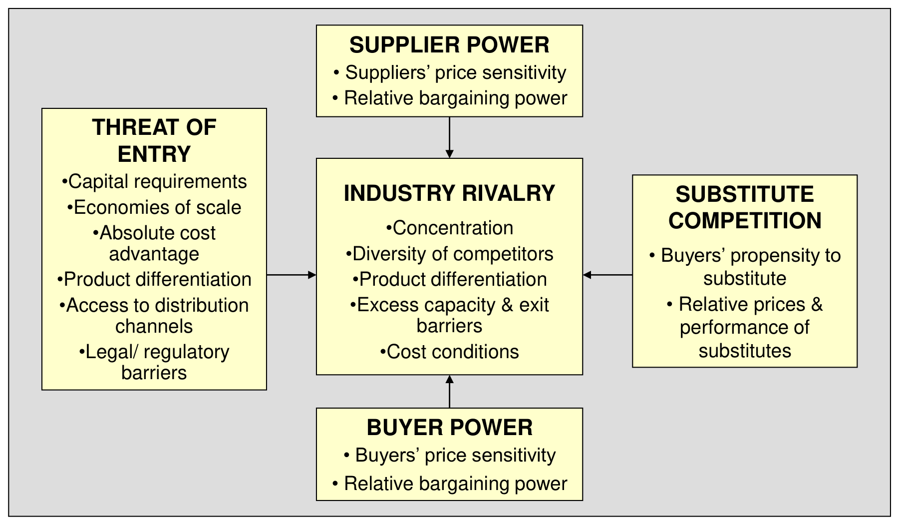
§ 11 The strategic management process [Slide 16]
Strategic management follows five steps: the mission statement, the performance objectives, the development of strategies, the implementation of the strategy, and the evaluation of performance.
§ 12 Corporate strategy and business strategy [Slides 17-18]
The aim is to earn a rate of profit above the competitive level; in other words, to answer the question "how do we make money?". Two sources contribute to it [Slide 17]:
- industry attractiveness, which raises the question "which businesses should we be in?" and is the domain of corporate strategy;
- competitive advantage, which raises the question "how should we compete?" and is the domain of business strategy.
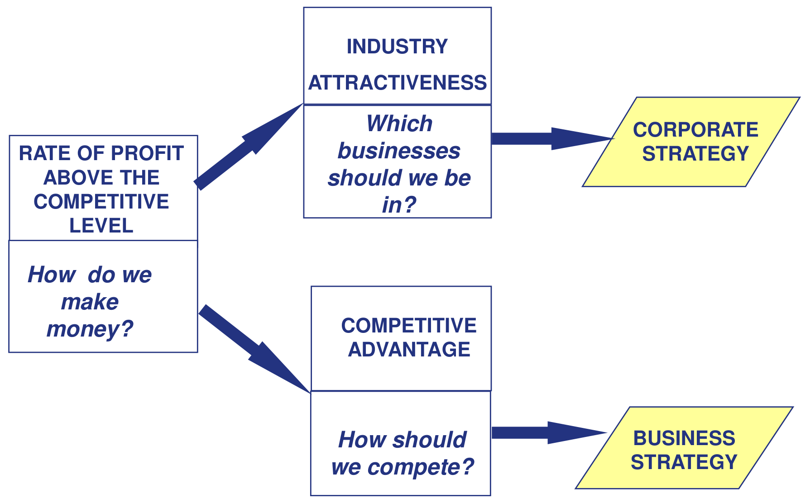
Business strategy is concerned with how a firm competes within a particular market. Corporate strategy is concerned with where a firm competes, that is, with the scope of its activities, which has three dimensions: geographical, vertical and product scope [Slide 18].
§ 13 The three dimensions of scope [Slide 19]
Each dimension of scope can be pictured as a choice between one firm and several (Grant, 2002):
- Vertical scope: three independent companies (one producing steel, one rolling it into sheet, one making steel cans), or all three stages of production inside a single company?
- Geographical scope: three independent companies producing cans in the US, the UK and Italy, or a single multinational owning and operating the can-making plants in all three countries?
- Product scope: should metal cans, plastic packaging and domestic appliances be made by three separate companies, or are there efficiencies to be gained by merging them into one?
In the integrated firm the vertical units (V), product units (P) and country units (G) are linked by an administrative interface; under specialization each unit is a separate firm linked to the others by market interfaces.
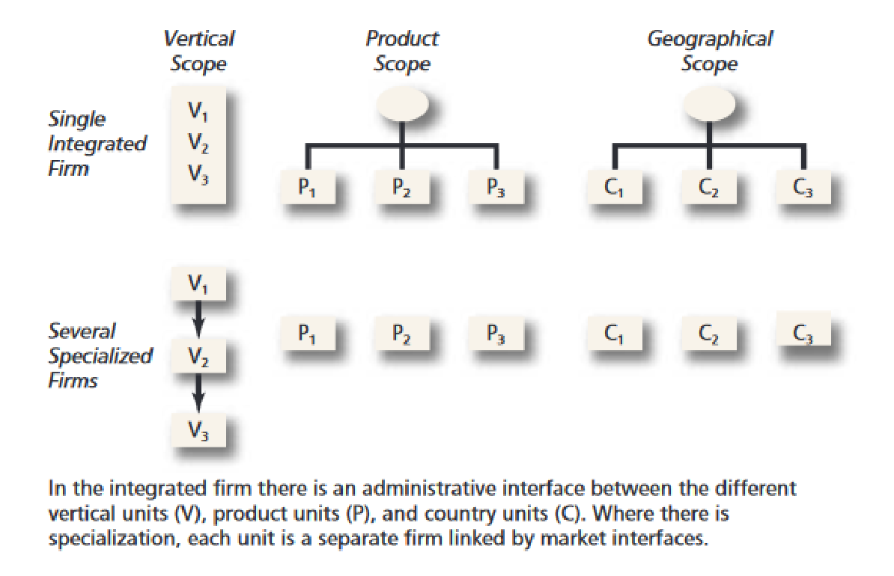
§ 14 Business strategy: sources of competitive advantage [Slide 20]
Competitive advantage comes from two sources: a cost advantage, offering a similar product at a lower cost, or a differentiation advantage, obtaining a price premium from a unique product.
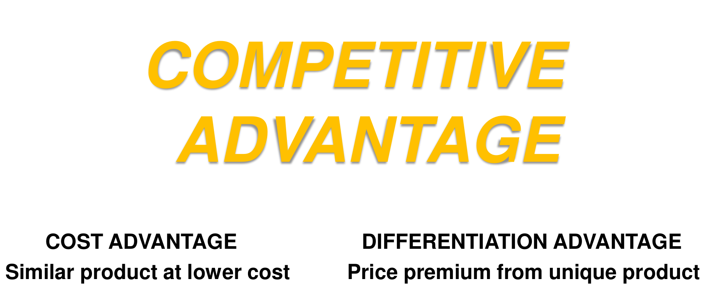
§ 15 Drivers of cost advantage [Slides 21-22]
| Driver | How it reduces costs |
|---|---|
| Economies of learning | Improved organizational routines |
| Economies of scale | Specialization and division of labour |
| Production techniques | Process innovation; reengineering of business processes |
| Product design | Standardization of designs and components; design for manufacture |
| Input costs | Location advantages; ownership of low-cost inputs; non-union labour; bargaining power |
| Capacity utilization | Ratio of fixed to variable costs; speed of capacity adjustment |
| Residual efficiency | Organizational slack; motivation and culture; managerial efficiency |
§ 16 Differentiation [Slides 23-24]
Differentiation concerns how a firm distinguishes its offerings from those of its competitors, that is, how the firm competes. In Porter's words, it means "providing something unique that is valuable to the buyer beyond simply offering a low price". The key is to create value for the customer [Slide 23].
Differentiation can be [Slide 24]:
- tangible, based on observable characteristics of the product: size, colour, materials, etc.; performance; packaging; complementary services;
- intangible, based on unobservable and subjective characteristics that appeal to the customer's image, status, identity and desire for exclusivity.
Differentiation is not only about the product: it embraces the whole relationship between supplier and customer (total customer responsiveness).
§ 17 Corporate strategy: diversification [Slide 25]
A diversification decision involves two questions: how attractive is the sector to be entered, and can the firm achieve a competitive advantage in it? Firms diversify for three reasons:
- growth: to escape from declining industries (e.g. tobacco, oil, newspapers);
- risk: diversification reduces the volatility of earnings;
- profit: bringing different businesses together may increase profitability.
§ 18 Types of diversification [Slide 26]
- Related diversification: the business expands its existing product lines or markets.
- Unrelated diversification: the business adds new, unrelated product lines or markets.
Diversification takes three forms: vertical integration (along the firm's own value chain), horizontal diversification (moving into a new industry) and geographical diversification (opening new markets).
§ 19 Vertical integration [Slide 27]
Vertical integration can be forward or backward.
| Advantages | Disadvantages |
|---|---|
| Control of inputs and outputs | Increased risk (outsourcing) |
| Reduction of transaction costs | Decreased flexibility |
| Independence | Loss of specialization advantages |
| Better competitive position | Increased administrative costs |
| Reduction of information asymmetries |
§ 20 Porter's value chain [Slides 28-31]
The term value chain was introduced by Michael Porter (1985). An organization is more than a random collection of resources: it arranges its resources into systems and activities that produce goods customers are willing to pay for, and the management of these activities and of their linkages is what gives it a competitive advantage [Slide 28].
The chain has two layers: support activities that span the whole firm, and primary activities that follow the product from inputs to after-sales. Together they produce the margin [Slide 29].
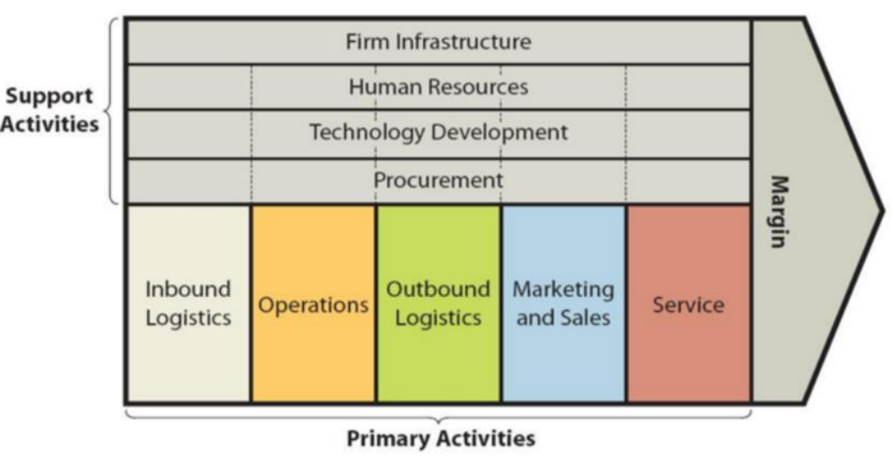
Primary activities [Slide 30]:
| Activity | Content |
|---|---|
| Inbound logistics | Relationships with suppliers and all the activities required to receive, store and disseminate inputs |
| Operations | All the activities required to transform inputs into outputs (products and services) |
| Outbound logistics | All the activities required to collect, store and distribute the output |
| Marketing and sales | Informing buyers about products and services, inducing them to purchase, and facilitating the purchase |
| Service | All the activities required to keep the product or service working effectively for the buyer after it is sold and delivered |
Secondary (support) activities [Slide 31]:
| Activity | Content |
|---|---|
| Procurement | The acquisition of inputs, or resources, for the firm |
| Human resource management | Recruiting, hiring, training, developing, compensating and, if necessary, dismissing or laying off personnel |
| Technological development | The equipment, hardware, software, procedures and technical knowledge used to transform inputs into outputs |
| Infrastructure | Serves the company's needs and ties its parts together: accounting, legal, finance, planning, public affairs, government relations, quality assurance and general management |
Reference: Porter, M. E., Competitive Advantage, The Free Press, New York, 1985, Ch. 1, pp. 11-15.